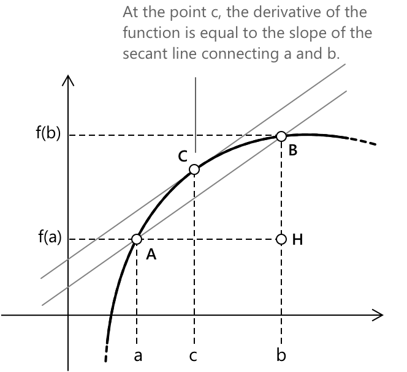
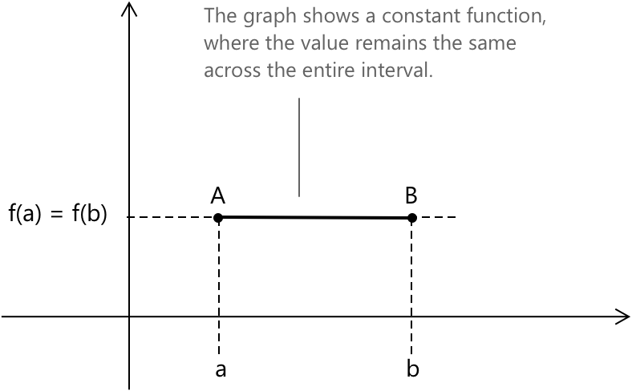

Теорема Лагранжа
Формулювання
Теорема Лагранжа, також відома як теорема про середнє значення, стверджує наступне. Розглянемо функцію \( f(x) \), неперервну на замкненому та обмеженому проміжку \([a, b]\) і диференційовну в кожній точці всередині проміжку. Тоді існує принаймні одна точка \( c \) всередині проміжку, така що виконується наступне співвідношення:
\[ f’ \left (c \right ) = \frac{f(b)-f(a)}{b-a} \]
Це означає, що існує принаймні одна точка, де похідна функції дорівнює кутовому коефіцієнту січної, що з'єднує точки \(a\) та \(b\). Іншими словами, у деякій точці проміжку миттєва швидкість зміни функції збігається з її середньою швидкістю зміни.
Геометричний погляд на теорему Лагранжа
З геометричної точки зору теорема стверджує, що існує принаймні одна точка \( c \), де дотична в цій точці паралельна січній, що з'єднує точки \( A \) та \( B \) на графіку.

У прямокутному трикутнику \( ABH \) маємо \(\overline{BH} = \overline{AH} \cdot \tan{\alpha}\), тобто:
\[\tan{\alpha} = \frac{\overline{BH}}{\overline{AH}} \]
Маємо:
\[\overline{BH} = f(b)-f(a), \quad \overline{AH} = b-a \]
Кутовий коефіцієнт відрізка \( AB \) дорівнює \(\tan\alpha\), тобто:
\[\tan{\alpha} = \frac{f(b)-f(a)}{b-a} \]
Оскільки дотична в точці \( c \) до кривої паралельна \( AB \), вони обидві мають однаковий кутовий коефіцієнт, звідси:
\[f’ \left(c \right) = \frac{f(b)-f(a)}{b-a} \]
Доведення
Щоб довести теорему Лагранжа, визначимо допоміжну функцію \( \varphi(x) \) наступним чином:
\[ \varphi(x) = f(x)-f(a)-\frac{f(b)-f(a)}{b-a} \cdot (x-a) \]
Перевіримо, що \( \varphi(x) \) задовольняє гіпотези теореми Ролля:
- \(f(x)\) є неперервною на замкненому проміжку \([a, b]\).
- \(f(x)\) є диференційовною на відкритому проміжку \((a, b)\).
- \(\varphi(a) = \varphi(b)\).
Обчисливши \( \varphi(a) \) та \( \varphi(b) \), отримаємо:
\[ \varphi(a) = f(a)-f(a)-\frac{f(b)-f(a)}{b-a} \cdot (a-a) = 0 \]
\[ \begin{align} \varphi(b) &= f(b)-f(a)-\frac{f(b)-f(a)}{b-a} \cdot (b-a)\\[0.5em] &= f(b)-(f(b)-f(a)) = 0 \end{align} \]
Отже, \( \varphi(a) = \varphi(b) = 0 \).
Застосовуючи теорему Ролля до \( \varphi(x) \), знайдемо, що існує принаймні одна точка \( c \) всередині проміжку \( ]a, b[ \), така що \( \varphi’ \left(c \right) = 0 \). Обчисливши похідну \( \varphi(x) \), маємо:
\[ \varphi’(x) = f’(x)-\frac{f(b)-f(a)}{b-a}\]
Тепер обчислимо похідну \( \varphi(x) \) у точці \( c \) і прирівняємо її до 0. З цього отримаємо:
\[ \varphi’ \left(c \right) = f’ \left(c \right)-\frac{f(b)-f(a)}{b-a} = 0\]
Тобто:
\[ f’ \left(c \right)=\frac{f(b)-f(a)}{b-a}\]
що точно відповідає тезі, яку ми хотіли довести.
Особливий випадок: коли похідна всюди дорівнює нулю
З теореми Лагранжа випливає, що якщо функція \( f(x) \) є неперервною на проміжку \([a,b]\), диференційовною на проміжку \( ]a,b[ \), і \( f’(x) \) дорівнює нулю в кожній точці всередині проміжку, то \( f(x) \) є сталою на всьому проміжку \([a,b]\).

Дійсно, якщо ми візьмемо точку \(\overline{x} \in [a,b]\) і застосуємо теорему до проміжку \([a, \overline{x}]\), то існує точка \(c \in ]a, \overline{x}[\) така, що: \[ f’\left( c \right) = \frac{f(\overline{x})-f(a)}{\overline{x}-a} \]
Оскільки \( f’(\overline{x}) = 0 \) для кожної точки в \( ]a,b[ \), звідси випливає, що \( f’\left( c \right) = 0 \) також. З цієї причини має бути:
\[f(\overline{x}) – f(a) = 0 \rightarrow f(\overline{x}) = f(a) \, \forall \, \overline{x} \in [a,b] \]
З цієї причини \( f \) є сталою на всьому проміжку \([a,b]\).
Числовий приклад
Щоб побачити теорему в дії, розглянемо конкретний випадок. Ми хочемо знайти точку \( c \) всередині заданого проміжку, де миттєва швидкість зміни функції збігається з її середньою швидкістю зміни на цьому проміжку. Обчислення також показують, що таку точку зазвичай неможливо передбачити шляхом простого огляду. Розглянемо поліном:
\[ f(x) = x^3 – 4x^2 + x + 6 \]
на замкненому проміжку \( [1,4] \). Оскільки \( f \) є поліномом, вона неперервна на \( [1,4] \) та диференційовна на \( (1,4) \). Отже, припущення теореми Лагранжа задоволені. Почнемо з обчислення значення функції в кінцевих точках:
\[ f(1) = 1 – 4 + 1 + 6 = 4 \] \[ f(4) = 64 – 64 + 4 + 6 = 10 \]
Кутовий коефіцієнт січної, що проходить через точки \( (1,4) \) та \( (4,10) \), дорівнює
\[ \frac{f(4) - f(1)}{4 - 1} = \frac{10 – 4}{3} = 2 \]
Це число представляє середню швидкість зміни \( f \) на \( [1,4] \). Далі обчислимо похідну:
\[ f’(x) = 3x^2 – 8x + 1 \]
Шукаємо значення \( c \), такі що \(f’(c) = 2.\) Це призводить до рівняння:
\[ 3c^2 – 8c + 1 = 2 \] \[ 3c^2 – 8c – 1 = 0 \]
Застосування квадратного рівняння дає:
\[ c = \frac{8 \pm \sqrt{64 + 12}}{6} = \frac{8 \pm \sqrt{76}}{6} = \frac{4 \pm \sqrt{19}}{3} \]
Отримаємо двох кандидатів:
\[ c_1 = \frac{4 – \sqrt{19}}{3} \approx 0.21 \] \[ c_2 = \frac{4 + \sqrt{19}}{3} \approx 2.79 \]
Теорема Лагранжа гарантує розв'язання всередині відкритого проміжку \( (1,4) \). Серед двох знайдених значень тільки:
\[ c = \frac{4 + \sqrt{19}}{3} \approx 2.79 \]
лежить у \( (1,4) \). Інший корінь виходить за межі проміжку і, отже, не є релевантним у цьому контексті. У цій точці дотична до графіка \( f \) паралельна січній, що з'єднує \( (1,4) \) та \( (4,10) \).
Цей приклад показує, що рівняння \( f’(c)=2 \) може мати більше одного розв'язання, проте для теореми мають значення лише ті, що лежать всередині проміжку.
Розв'язання: \[ c = \dfrac{4+\sqrt{19}}{3} \]
Вибрана література
-
Harvard University, O. Knill. The Mean Value Theorem
-
Stony Brook University. Lecture 18: Mean Value Theorem
-
University of California Davis, D. Kouba. Mean Value Theorem – Problems and Proofs
-
University of Cambridge, W. T. Gowers. What is the point of the Mean Value Theorem?